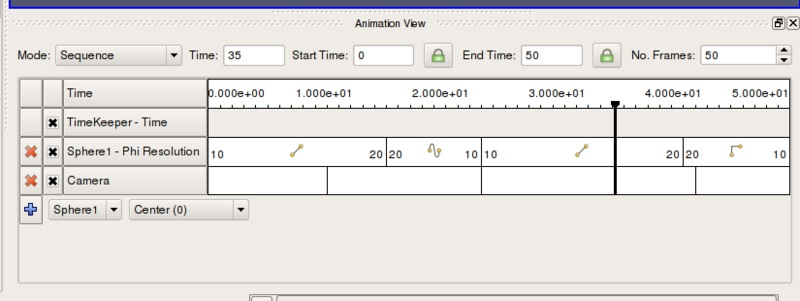
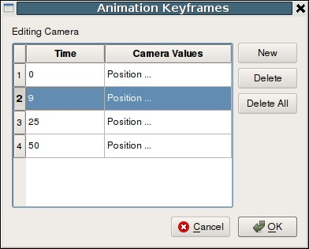
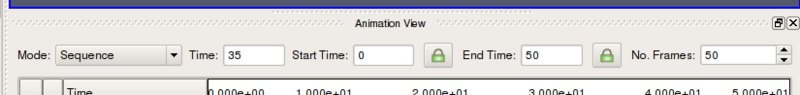
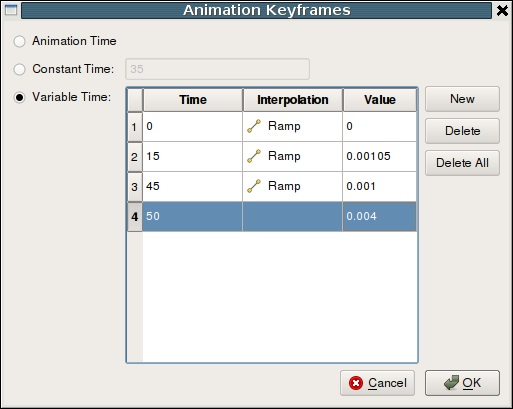
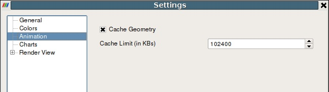
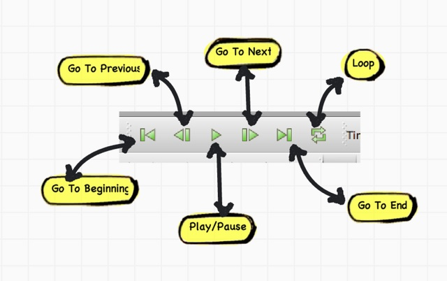
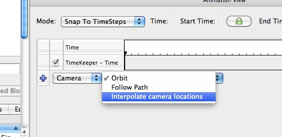
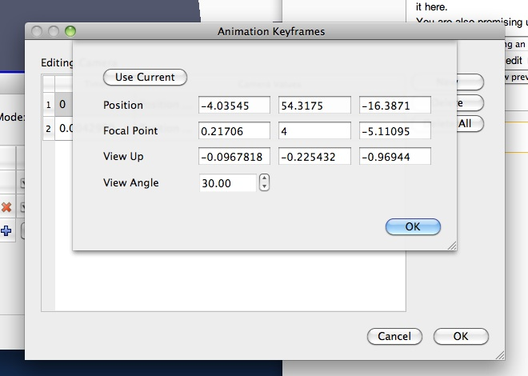
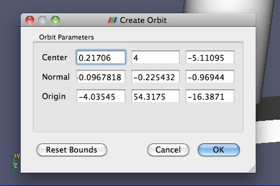
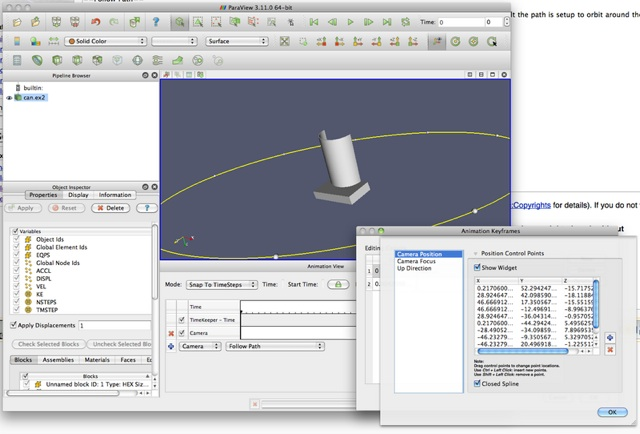

Animation View
In ParaView, you can create animations by recording a series of keyframes. At each keyframe you set values for the properties of the readers, sources and filters that make up the visualization pipeline, as well as the position and orientation of the camera. Once you have chosen the parameters of the animation, you can play through the animation. When you play the animation, you can cache the geometric output of the visualization pipeline in memory. When you subsequently replay the animation, playback will be much faster, because very little computation must be done to generate the images. Also the results of the animation can be saved to image files (one image per animation frame) or to a movie file. The geometry rendered at each frame can also be saved in ParaView’s PVD file format, which can be loaded back into ParaView as a time varying data set.
Animation View
Animation View is the user-interface used to create animations by adding keyframes. It is modeled similar to popular animation and key-frame editing application with ability to create tracks for animating multiple parameters. The Animation View is accessible from the View menu.
This view is presented as a table. Above the table are the controls that control how time progresses in the animation. These were discussed previously. Within the table the tracks of the animation appear are rows, and animation time is presented increasing from left to right. The first row in the table, simply labeled Time, shows the total span of time that the animation can cover. The currently displayed time is indicated both in the Time field at the top and with a thick, vertical, draggable line within the table.
Along the left side of the Animation View is an expandable list of the names of the animation tracks (i.e., a particular object and property to animate). You choose a data source and then a particular property of the data source in the bottom row. To create a animation track with keyframes for that property, click the plus mark on the left-hand side. This will create a new track. In the figure, tracks already exist for SphereSource1’s Phi Resolution property and for the Camera’s position. To delete a track press the 'X' button. You can temporarily disable a track by un-checking the checkbox on the right of the track. To enter values for the property, double-click within the white area to the right of the track name. This will bring up the Animation Keyframes dialog. Double-clicking in the camera entry brings up a dialog like the one in the following figure.
From the Animation Keyframes dialog you can press New to create new keyframes or press Delete or Delete All to delete some or all of them. Clicking New will add a new row to the table. In any row, you can click within the Time column to choose a particular time for the keyframe and click in the right-hand column to enter values for the parameter. The exact user interface components that let you set values for the property at the keyframe time vary. When available, you can change the interpolation between two keyframes by double-clicking on the central interpolation column.
Within the tracks of the Animation View, the place in time where each keyframe occurs is shown as a vertical line. The values chosen for the property at that time and the interpolation function used between that value and the next are shown as text when appropriate. In previous figure for example, the sphere resolution begins at 10 and then changes to 20 varying by linear interpolation between them. The camera values are too lengthy to show as text so they are not displayed in the track, but we can easily see that there are four keyframes spaced throughout the animation. The vertical lines in the tracks themselves are draggable, so you can easily adjust the time at which each keyframe occurs.
Animation View Header
The Animation View has a header-bar that lets you control some properties of the animation itself.
Mode controls the animation playback mode. ParaView supports 3 modes for playing animation. In Sequence mode, the animation is played as a sequence of images (or frames) generated one after the other and rendered in immediate succession. The number of frames is controlled by the No. Frames spinbox at the end of the header. Note that the frames are rendered as fast as possible. Thus the viewing frame rate depends on the time needed to generate and render each frame.
In Real Time mode, the Duration spinbox (replacing the No. Frames spinbox) indicates the time in seconds over which the entire animation should run. Each frame is rendered using the current wall clock time in seconds relative to the start time. The animation runs for nearly the number of seconds specified by the Duration (secs) spinbox. In turn, the number of frames actually generated (or rendered) depends on the time to generate (or render) each frame.
In Snap To TimeSteps mode, the number of frames in the animation is determined by the number of time values in the data set being animated. This is the animation mode used for ParaView's default animations: playing through the time values in a data set one after the other. Default animations are created by ParaView when a data set with time values is loaded; no action is required by the user to create the animation. Note that using this mode when no time-varying data is loaded will result in no animation at all.
In Sequence mode, the final item in the header is the No. Frames spinbox. This spinbox lets you pick the total number of frames for the animation. Similarly in Real Time mode, the final line lets you choose the duration of the animation. In Snap To Timesteps mode, the total number of frames is dictated by the data set, and therefore the spinbox is disabled.
The Time entry-box shows the current animation time which is same as shown by a vertical marker in this view. One can change the current animation time by either entering a value in this box, if available or dragging the vertical marker. The Start Time and End Time entry-boxes display the start and end times for the animation. By default, when you load time varying data sets, the start and end times are automatically adjusted to cover the entire time range present in the data. The lock check-buttons to the right of the Start Time and End Time widgets will prevent this from happening so that you can ensure that your animation covers a particular time domain of your choosing.
Animating Time-Varying Data
When you load time-varying data, ParaView automatically creates a default animation that allows you to play through the temporal domain of the data without manually creating an animation to do so. With the Animation View, you can uncouple the data time from the animation time so that you can create keyframes that manipulate the data time during animation as well.
If you double click in the TimeKeeper – Time track, the Animation Keyframes dialog, an example of which is shown in Figure below, appears. In this dialog, you can make data time progress in three fundamentally different ways. If the Animation Time radio-button is selected, then the data time will be tied to and scaled with the animation time so that as the animation progresses you will see the data evolve naturally. You can select Constant Time instead if you want to ignore the time varying nature of the data. In this case you choose a particular time value at which the data will be displayed for the duration of the animation. Finally, you can select the Variable Time radio-button to have full control over data time and control it as you do any other animatible property in the visualization pipeline. In the example shown in Figure below, time is made to progress forward for the first 15 frames of the animation, then backward for the next 30, and finally forward for the final 15.

Animation Settings
Additional animation properties can be changed using the Animation page in the Edit | Settings dialog. Using these settings one can control whether geometry must be cached to improve playback performance during looping as well as the maximum size of geometry to cache to avoid memory overflows.
Playing an Animation
Once you have designed you animation, you can play through it with the VCR controls toolbar.

Animating the Camera
Just like one can change parameters on sources and filters in an animation, one can also change the camera parameters. One can add animation tracks to animate the camera for all the 3D render views in the setup separately. To add a camera animation track for a view, with the view selected, click on the "+" button after choosing "Camera" from the first drop down. The second drop down allows users to choose how to animate the camera. There are three possible options each of which provides different mechanisms to specify the keyframes. It's not possible to change the mode after the animation track has been added, but one can simply delete the track and create a new one.
Interpolate Camera Locations
In this mode, the user specifies camera position, focal point, view angle and up direction at each keyframe. The animation player interpolates between these specified locations. As with other parameters, to edit the keyframes, one double-clicks on the track.It is also possible to capture the current location as a keyframe by using the "Use Current" button.
It can be quite challenging to add key frames correctly and frequently to ensure that the animation results in a smooth visualization using this mode.
Orbit
This mode makes it possible to quickly create a camera animation in which the camera revolves around an object or objects of interest. Before adding the Camera track, select the object or objects in the pipeline browser that you want to revolve around. Then choose "Orbit" from the "Camera" combo-box in the Animation View and hit "+". This will popup a dialog where one can edit the orbit parameters such as the center of revolution, normal for the plane of revolution and the origin i.e. a point on the plane of revolution where the revolution begins. By default, the Center is the center of the bounds of the selected objects, Normal is the current up direction used by the camera while the origin is the current camera position.

Follow Path
In this mode the user gets the opportunity to specify the path taken by the camera position and camera focal point. By default the path is setup to orbit around the selected objects. User can then edit the keyframe to change the paths.
Figure shows the dialog for editing these paths for a keyframe. When "Camera Position" or "Camera Focus" is selected, a widget is shown in the 3D view that can be used to set the path. Use Ctrl+Left Click to insert new control points, and Shift+Left Click to remove control points. One can also toggle when path should be closed or not.
